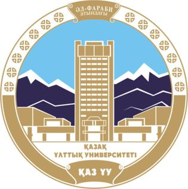

Модель культур степи
Собрать научную модель развития культур Степной Евразии в пространстве и глубокой хронологии — как в миссии программы.
Долгосрочный план работ — исследовать евразийскую степную цивилизацию: от чингизидских политий и Улуса Джучи до татарских ханств, городов на трансконтинентальных путях, архивов, топонимики, языка письменного наследия и международной ГИС с участием специалистов Центральной Азии и Восточной Европы.
Степная Евразия — место трансфера культур и технологий и «колыбель» народов уникального языкового пространства; реализация программы усиливает российскую науку, межкультурный диалог и базу для достоверного знания о прошлом.
Собрать научную модель развития культур Степной Евразии в пространстве и глубокой хронологии — как в миссии программы.
Проследить наследие в средневековье и новое время: государственность, города, влияние трансевразийских торговых магистралей.
Теория и источники: общество, религии, письменность и литература, этнокультурная динамика степного мира.
Текущие события программы: полевые сезоны, научные семинары, публикационные проекты и предстоящие международные обсуждения по истории и культуре Степной Евразии.
На линии направления «Историко-культурное наследие… в памятниках Южной и Восточной Сибири» и смежных проектах археология Степной Евразии открывает полевой контур сезона.
В среду экспедиций добавлены новые объектные карточки; готовится интеграция с приложением образовательно-туристских маршрутов.
Том подводит итог международной конференции авторов проекта и открывает серию книг программы по политической истории татарских государств XV–XVII вв.
Программа объединяет ключевые исследовательские направления, связанные с археологией, историей, языком, культурой, энциклопедической и справочной работой, публикациями и цифровым представлением результатов.
Программа ориентирована на развитие научного взаимодействия с исследовательскими центрами, университетами, музеями, архивами и экспертными сообществами стран Евразии.

КазНУ им. аль-Фараби · Казахстан
Учёные объединят археологические и историко-географические проекты вдоль ключевых трасс Степной Евразии.
Подробнее
Университет Цинхуа · Китай
Партнёрские библиотеки предоставят оцифрованные карты для включения в открытый корпус программы.
ПодробнееВенгерская академия наук · Венгрия
Цикл лекций и совместных семинаров с акцентом на сопоставительную историю и материальную культуру.
Подробнее